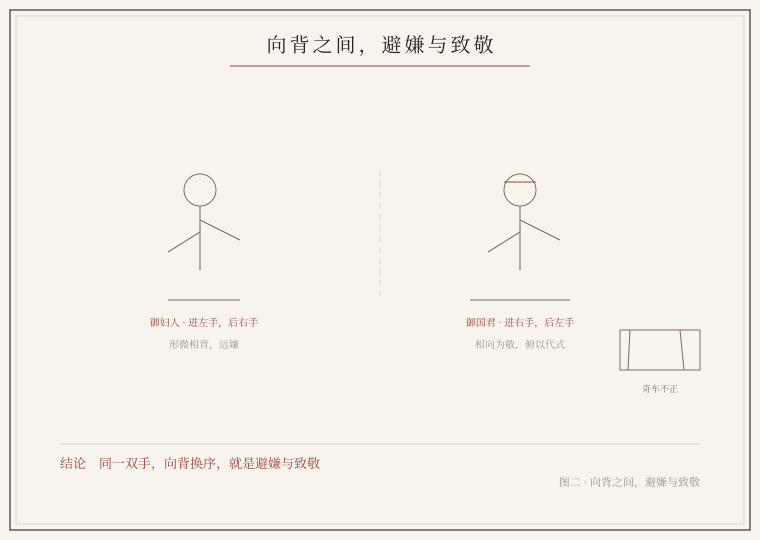

曲礼上 · 一·一百二十三 · 第 121 课
为妇人驾车，先出左手、后出右手，取侧背之势；为国君驾车，先出右手、后出左手，并微俯其身。国君不乘奇邪不正之车。
说什么事：仆御妇人，则进左手，后右手；御国君，则进右手、后左手而俯。国君不乘奇车。
落在哪一层：仪，兼及礼意。讲的是「面向」与「避嫌」。
为何编在此位：上节论位之空与不空，此节论身之向与背。位有虚实，身有向背。
【经】僕御婦人，則進左手，後右手；御國君，則進右手、後左手而俯。國君不乘奇車。
【注】遠嫌。敬也。奇車，獵衣之屬。
进左手，后右手 疏「仆在中央，妇人在左，仆御之时，进左手持辔，所以尔者，形微相背也」。
进右手，后左手 疏「礼以相向为敬，故进右手。非男女，无所嫌也」。
而俯 疏「既御不得恒式，故但俯俛而为敬也」。
奇车 注「猎衣之属」。疏「国君出入宜正，不可乘奇邪不正之车」；卢氏「不如御者之车也」；《隐义》「猎车之形，今之钩车是也。衣车如鳖而长也。汉桓帝之时，禁臣下乘之」。
远嫌／敬 注两字分属两句：前句为远嫌，后句为敬。
为妇人驾车，先出左手、后出右手；为国君驾车，先出右手、后出左手，并微俯其身。国君不乘奇邪不正之车。
三句：一句避嫌，一句致敬，一句守正。同一个人、同一双手，因所御者不同而换序。礼之细，细到左右手的先后。
第一层 形微相背 疏说得极实：左手在前，身体略侧，不与妇人相向。避嫌不靠心，靠姿势。
第二层 相向为敬 为君则反过来，右手在前，正面相对。同一个动作，对一个人是避，对另一个人是敬。
第三层 不得恒式 疏「既御不得恒式，故但俯俛」。御者双手在辔，不能凭式，只好俯身。礼遇到手的占用，就换一种表达。
第四层 不乘奇车 注「猎衣之属」，疏「出入宜正」。国君之车要正，因为国君之行要为天下立标准。
与今日何干 同一间办公室、同一场会议，与谁相对、朝哪边侧身，都是分寸。分寸不是虚礼，是不让人难受。
| 左 | 右 |
|---|---|
| 御妇人进左手 | 形微相背，远嫌 |
| 御国君进右手 | 相向为敬 |
| 而俯 | 不得恒式，俯俛代敬 |
| 国君不乘奇车 | 出入宜正，不为奇邪 |
| 猎车、衣车 | 奇车之属，汉禁臣下乘之 |
画两个极简的人形侧影，皆坐于车箱之中、双手持辔：左一人身体略侧向外、左手在前右手在后；右一人正面朝前、右手在前左手在后，头略低。两人之间以一道浅竖线分开。车箱外另画一辆形制歪斜的小车轮廓，车轮偏心、车辕不正。不画面容、不写文字。赭色只用在右一人低下的头颈处。
